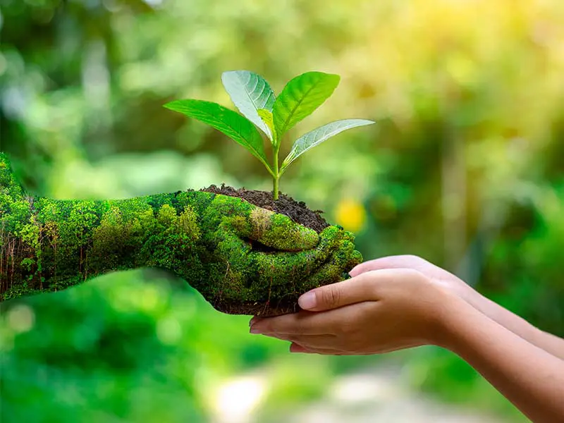
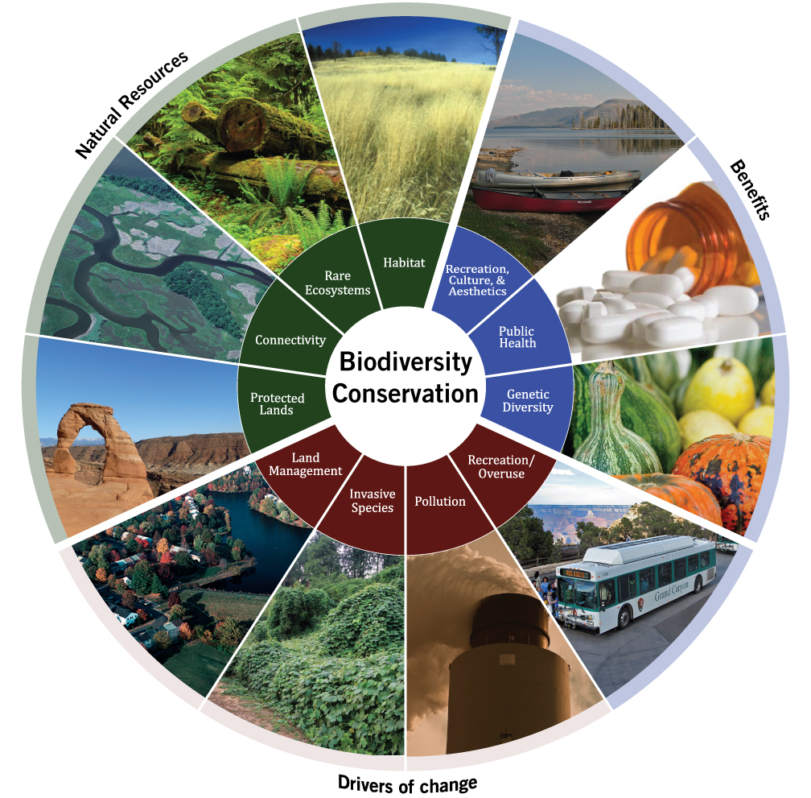

What is Biodiversity? is
Biodiversity or biological diversity is the variety and variability of life on Earth. Biodiversity is a measure of variation at the genetic (genetic variability), species (species diversity), and ecosystem (ecosystem diversity) level. Biodiversity is not distributed evenly on Earth; it is usually greater in the tropics as a result of the warm climate and high primary productivity in the region near the equator. Tropical forest ecosystems cover less than 10% of earth's surface and contain about 90% of the world's species. Marine biodiversity is usually higher along coasts in the Western Pacific, where sea surface temperature is highest, and in the mid-latitudinal band in all oceans. There are latitudinal gradients in species diversity.
Biodiversity generally tends to cluster in hotspots, and has been increasing through time, but will be likely to slow in the future as a primary result of deforestation. It encompasses the evolutionary, ecological, and cultural processes that sustain life.[2] Rapid environmental changes typically cause mass extinctions. The ongoing global biodiversity crisis not only involves biological extinctions, but also the loss of experience and the gradual fading of cultural knowledge and collective memory of species.[3] More than 99.9% of all species that ever lived on Earth, amounting to over five billion species, are estimated to be extinct. Estimates on the number of Earth's current species range from 10 million to 14 million, of which about 1.2 million have been documented and over 86% have not yet been described. The total amount of related DNA base pairs on Earth is estimated at 5.0 x 1037 and weighs 50 billion tonnes.
In comparison, the total mass of the biosphere has been estimated to be as much as four trillion tons of carbon. In July 2016, scientists reported identifying a set of 355 genes from the last universal common ancestor (LUCA) of all organisms living on Earth. The age of the Earth is about 4.54 billion years. The earliest undisputed evidence of life dates at least from 3.7 billion years ago, during the Eoarchean era after a geological crust started to solidify following the earlier molten Hadean eon. There are microbial mat fossils found in 3.48 billion-year-old sandstone discovered in Western Australia. Other early physical evidence of a biogenic substance is graphite in 3.7 billion-year-old meta-sedimentary rocks discovered in Western Greenland. More recently, in 2015, "remains of biotic life" were found in 4.1 billion-year-old rocks in Western Australia. According to one of the researchers, "If life arose relatively quickly on Earth...then it could be common in the universe. Why is Conservation Important?
Conservation refers to the protection and management of natural resources to ensure their sustainable use. Conservation is important because it helps to preserve biodiversity, maintain ecosystem services, and ensure that natural resources are available for future generations. Conservation efforts can include activities like habitat restoration, protected area management, and sustainable resource use.

OUR MISSION
Our main goal is to protect animals
Organizing awareness campaigns and workshops to educate people about biodiversity conservation. Encouraging sustainable practices such as reducing waste, using renewable energy sources, and minimizing the use of harmful chemicals. Promoting the conservation of wildlife habitats and supporting organizations working towards protecting endangered species. Encouraging people to plant trees, support local agriculture, and consume sustainably harvested seafood. Collaborating with government agencies to establish policies that promote biodiversity conservation. Educating children about biodiversity and the need to protect it through school programs and curricula.

WHY YOU SHOULD JOIN US
A lot of animals need protection
A lot of animals need protection
When you join a biodiversity website, you'll have the opportunity to connect with other people who care about the environment and are passionate about protecting it. You can share your ideas, real difference in the world.
Importance of Biodiversity
All species are interconnected. They depend on one another. Forests provide homes for animals. Animals eat plants. The plants need healthy soil to grow. Fungi help decompose organisms to fertilize the soil. Bees and other insects carry pollen from one plant to another, which enables the plants to reproduce. With less biodiversity, these connections weaken and sometimes break, harming all the species in the ecosystem.
Ecosystems with a lot of biodiversity are generally stronger and more resistant to disaster than those with fewer species. For instance, some diseases kill only one kind of tree. In the early 1900s, American chestnut blight killed most of the chestnut trees in the eastern forests of North America. The forest ecosystem survived because other kinds of trees also grew there.
Biodiversity is important to people in many ways. Plants, for instance, help humans by giving off oxygen. They also provide food, shade, construction material, medicines, and fiber for clothing and paper. The root system of plants helps prevent flooding. Plants, fungi, and animals such as worms keep soil fertile and water clean. As biodiversity decreases, these systems break down.
Hundreds of industries rely on plant biodiversity. Agriculture, construction, medical and pharmaceutical, fashion, tourism, and hospitality all depend on plants for their success. When the biodiversity of an ecosystem is interrupted or destroyed, the economic impact on the local community could be enormous.
Biodiversity is especially important to the medical and pharmaceutical industries. Scientists have discovered many chemicals in rainforest plants that are now used in helpful drugs. One of the most popular and safe pain relievers, aspirin, was originally made from the bark of willow trees. Medicines that treat some forms of cancer have been made from the rosy periwinkle, a flower that grows on the African island of Madagascar. Scientists have studied only a small percentage of rainforest species in their search for cures. But every year, thousands of species go extinct, or die out entirely, before scientists can determine whether they might be useful in medicines.